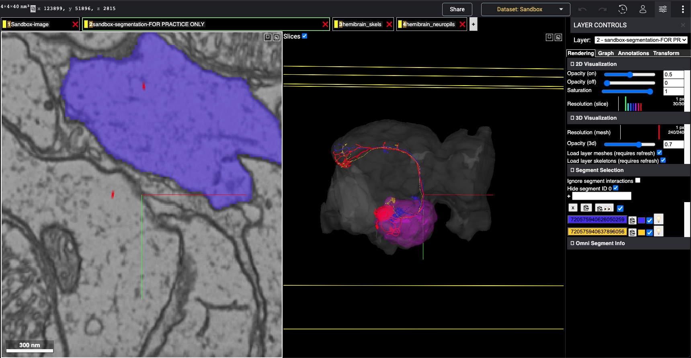

Co-plotting hemibrain skeleton with flywire dataset¶
This section contains example of fetching skeleton from hemibrain dataset and co-plotting with a flywire instance¶
Import neccesary library modules now¶
[1]:
import navis
import fafbseg
import flybrains
[20]:
from pyroglancer.localserver import startdataserver, closedataserver
from pyroglancer.flywire import flywireurl2dict, add_flywirelayer, set_flywireviewerstate
127.0.0.1 - - [07/Jun/2021 09:00:19] "GET /precomputed/hemibrain_skels/skeletons//info HTTP/1.1" 200 -
127.0.0.1 - - [07/Jun/2021 09:00:19] "GET /precomputed/hemibrain_neuropils/mesh/info HTTP/1.1" 200 -
127.0.0.1 - - [07/Jun/2021 09:00:19] "GET /precomputed/hemibrain_neuropils/mesh/200:0 HTTP/1.1" 200 -
127.0.0.1 - - [07/Jun/2021 09:00:19] "GET /precomputed/hemibrain_neuropils/mesh/300:0 HTTP/1.1" 200 -
127.0.0.1 - - [07/Jun/2021 09:00:19] "GET /precomputed/hemibrain_skels/skeletons//1734350788 HTTP/1.1" 200 -
127.0.0.1 - - [07/Jun/2021 09:00:19] "GET /precomputed/hemibrain_skels/skeletons//1734350908 HTTP/1.1" 200 -
127.0.0.1 - - [07/Jun/2021 09:00:19] "GET /precomputed/hemibrain_neuropils/mesh/200 HTTP/1.1" 200 -
127.0.0.1 - - [07/Jun/2021 09:00:19] "GET /precomputed/hemibrain_neuropils/mesh/300 HTTP/1.1" 200 -
[3]:
import navis.interfaces.neuprint as neu
from navis.interfaces.neuprint import NeuronCriteria as NC, SynapseCriteria as SC
Set configurations to fetch from data from neuprint¶
[4]:
client = neu.Client('https://neuprint.janelia.org/', dataset='hemibrain:v1.1')
[5]:
client
[5]:
Client("https://neuprint.janelia.org", "hemibrain:v1.1")
Get sample skids and neuropil meshes from neuprint¶
[6]:
neurons_df, roi_counts_df = neu.fetch_neurons(NC(status='Traced',type='DA1_lPN',regex=True)) #get some DA1 PNs..
[7]:
da1pnbodyidList = neurons_df[['bodyId']]
[8]:
da1pn_skel = neu.fetch_skeletons(da1pnbodyidList, heal=1000, max_threads=30)
INFO - 2021-06-07 08:59:02,147 - utils - NumExpr defaulting to 8 threads.
[9]:
#fetch mesh for Right Antenna lobe..
al_R = neu.fetch_roi('AL(R)')
[10]:
hemibrain_mesh = navis.Volume(flybrains.JRCFIB2018Fraw.mesh)
Transform them to Flywire space..¶
[11]:
flywire_neuron=navis.xform_brain(da1pn_skel,source='JRCFIB2018Fraw', target='FLYWIRE')
INFO : Pre-caching deformation field(s) for transforms... (navis)
INFO - 2021-06-07 08:59:09,210 - base - Pre-caching deformation field(s) for transforms...
Transform path: JRCFIB2018Fraw -> JRCFIB2018F -> JRCFIB2018Fum -> JRC2018F -> FAFB14um -> FAFB14 -> FAFB14raw -> FLYWIREraw -> FLYWIRE
[12]:
flywirevol = {}
flywirevol['hemibrain']=navis.xform_brain(hemibrain_mesh, source='JRCFIB2018Fraw', target='FLYWIRE')
flywirevol['AL_R']=navis.xform_brain(al_R, source='JRCFIB2018Fraw', target='FLYWIRE')
Transform path: JRCFIB2018Fraw -> JRCFIB2018F -> JRCFIB2018Fum -> JRC2018F -> FAFB14um -> FAFB14 -> FAFB14raw -> FLYWIREraw -> FLYWIRE
Transform path: JRCFIB2018Fraw -> JRCFIB2018F -> JRCFIB2018Fum -> JRC2018F -> FAFB14um -> FAFB14 -> FAFB14raw -> FLYWIREraw -> FLYWIRE
[13]:
flywirevol['hemibrain'].id = 200
flywirevol['AL_R'].id = 300
flywirevol
[13]:
{'hemibrain': <navis.Volume(name=None, id=200, color=(0.85, 0.85, 0.85, 0.2), vertices.shape=(22125, 3), faces.shape=(44270, 3))>,
'AL_R': <navis.Volume(name=None, id=300, color=(0.85, 0.85, 0.85, 0.2), vertices.shape=(38829, 3), faces.shape=(77672, 3))>}
Start the dataserver to host precomputed data..¶
[14]:
startdataserver()
Serving data from: /var/folders/_l/lrfvj_8j3ps0c37ncbr3c8dh0000gn/T/tmp4kwke859
Serving directory at http://127.0.0.1:8000
Get the url from flywire to append data onto..¶
[15]:
shorturl = 'https://ngl.flywire.ai/?json_url=https://globalv1.flywire-daf.com/nglstate/5644175227748352'
#This flywire segments has some stuff similar to the DA1 PNs, you will notice their closeness in the final plot
Add bodyids to flywire layers..¶
[16]:
tmpviewer = add_flywirelayer(flywireurl2dict(shorturl), layer_kws = {'type': 'skeletons',
'source': flywire_neuron[2:4],
'name': 'hemibrain_skels',
'color': 'red'})
#'alpha': 0.3, doesn't work yet in skeleton layers..
/private/var/folders/_l/lrfvj_8j3ps0c37ncbr3c8dh0000gn/T/tmp4kwke859/precomputed/hemibrain_skels/skeletons/1734350788
/private/var/folders/_l/lrfvj_8j3ps0c37ncbr3c8dh0000gn/T/tmp4kwke859/precomputed/hemibrain_skels/skeletons/1734350908
creating: /private/var/folders/_l/lrfvj_8j3ps0c37ncbr3c8dh0000gn/T/tmp4kwke859/precomputed/hemibrain_skels/skeletons/seg_props
{'1734350788': ['#ff0000'], '1734350908': ['#ff0000']}
flywire url at: https://ngl.flywire.ai/?json_url=https://globalv1.flywire-daf.com/nglstate/5341907991396352
Add neuropil meshes to flywire layers¶
[17]:
shorturl = tmpviewer
[18]:
tmpviewer = add_flywirelayer(flywireurl2dict(shorturl), layer_kws = {'type': 'volumes',
'source': [flywirevol['hemibrain'],
flywirevol['AL_R']],
'name': 'hemibrain_neuropils',
'color': ['grey', 'magenta'],
'alpha': 0.3})
mesh/200
Seg id is: 200
Full filepath: /private/var/folders/_l/lrfvj_8j3ps0c37ncbr3c8dh0000gn/T/tmp4kwke859/precomputed/hemibrain_neuropils/mesh/200
mesh/300
Seg id is: 300
Full filepath: /private/var/folders/_l/lrfvj_8j3ps0c37ncbr3c8dh0000gn/T/tmp4kwke859/precomputed/hemibrain_neuropils/mesh/300
creating: /private/var/folders/_l/lrfvj_8j3ps0c37ncbr3c8dh0000gn/T/tmp4kwke859/precomputed/hemibrain_neuropils/mesh/segment_properties
creating: /private/var/folders/_l/lrfvj_8j3ps0c37ncbr3c8dh0000gn/T/tmp4kwke859/precomputed/hemibrain_neuropils/mesh/segment_names
flywire url at: https://ngl.flywire.ai/?json_url=https://globalv1.flywire-daf.com/nglstate/5853351342243840
[21]:
tmpviewer,shorturl = set_flywireviewerstate(tmpviewer, axis_lines=False, bounding_box=False)
flywire url at: https://ngl.flywire.ai/?json_url=https://globalv1.flywire-daf.com/nglstate/5209798823903232
127.0.0.1 - - [07/Jun/2021 09:00:30] "GET /precomputed/hemibrain_skels/skeletons//info HTTP/1.1" 304 -
127.0.0.1 - - [07/Jun/2021 09:00:30] "GET /precomputed/hemibrain_neuropils/mesh/info HTTP/1.1" 304 -
127.0.0.1 - - [07/Jun/2021 09:00:30] "GET /precomputed/hemibrain_neuropils/mesh/300:0 HTTP/1.1" 304 -
127.0.0.1 - - [07/Jun/2021 09:00:30] "GET /precomputed/hemibrain_neuropils/mesh/200:0 HTTP/1.1" 304 -
127.0.0.1 - - [07/Jun/2021 09:00:30] "GET /precomputed/hemibrain_skels/skeletons//1734350908 HTTP/1.1" 304 -
127.0.0.1 - - [07/Jun/2021 09:00:30] "GET /precomputed/hemibrain_skels/skeletons//1734350788 HTTP/1.1" 304 -
127.0.0.1 - - [07/Jun/2021 09:00:30] "GET /precomputed/hemibrain_neuropils/mesh/200 HTTP/1.1" 304 -
127.0.0.1 - - [07/Jun/2021 09:00:30] "GET /precomputed/hemibrain_neuropils/mesh/300 HTTP/1.1" 304 -
127.0.0.1 - - [07/Jun/2021 11:19:00] "GET /precomputed/hemibrain_skels/skeletons//info HTTP/1.1" 304 -
127.0.0.1 - - [07/Jun/2021 11:19:00] "GET /precomputed/hemibrain_neuropils/mesh/info HTTP/1.1" 304 -
127.0.0.1 - - [07/Jun/2021 11:19:00] "GET /precomputed/hemibrain_skels/skeletons//1734350908 HTTP/1.1" 200 -
127.0.0.1 - - [07/Jun/2021 11:19:00] "GET /precomputed/hemibrain_skels/skeletons//1734350788 HTTP/1.1" 200 -
127.0.0.1 - - [07/Jun/2021 11:19:00] "GET /precomputed/hemibrain_neuropils/mesh/300:0 HTTP/1.1" 304 -
127.0.0.1 - - [07/Jun/2021 11:19:00] "GET /precomputed/hemibrain_neuropils/mesh/200:0 HTTP/1.1" 304 -
127.0.0.1 - - [07/Jun/2021 11:19:00] "GET /precomputed/hemibrain_neuropils/mesh/300 HTTP/1.1" 200 -
127.0.0.1 - - [07/Jun/2021 11:19:00] "GET /precomputed/hemibrain_neuropils/mesh/200 HTTP/1.1" 200 -
Screenshot of the flywire instance¶
The grey mesh is the hemibrain neuropil, magenta is the Antenna lobe (Right), you can see the skeletons from hemibrain (red) plotted in the skeleton layer, and some similar neurons (meshes) of the flywire dataset plotted in green and yellow¶

Close the dataserver¶
[22]:
closedataserver()
Closing server at http://127.0.0.1:8000
Cleaning directory at /private/var/folders/_l/lrfvj_8j3ps0c37ncbr3c8dh0000gn/T/tmp4kwke859
[ ]: